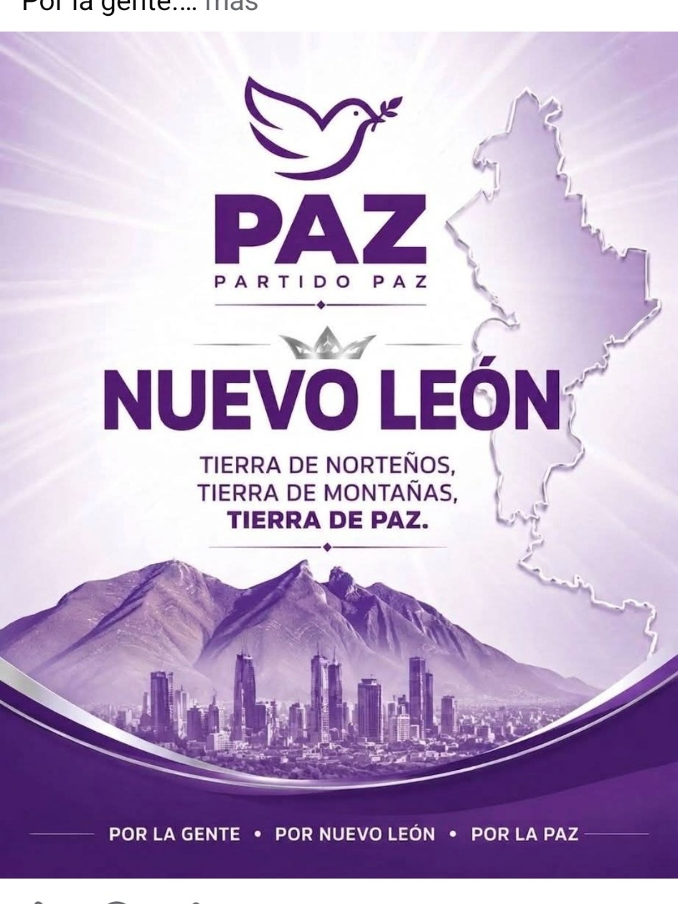
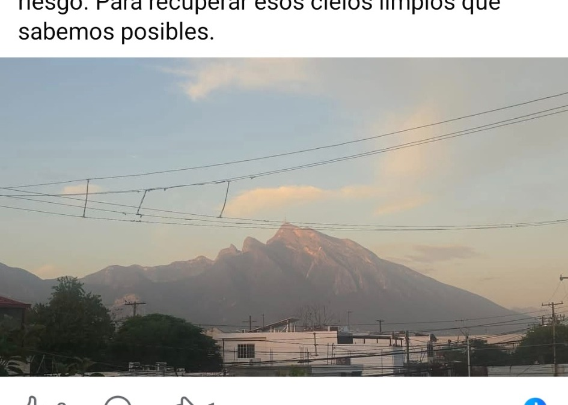
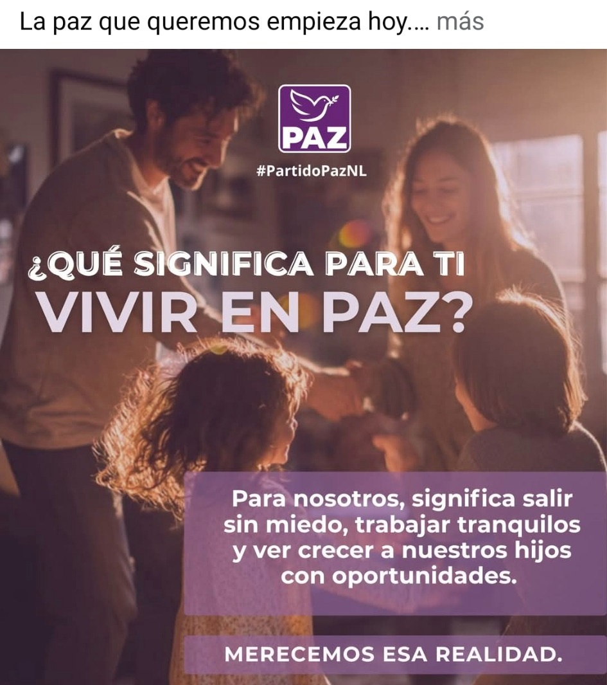
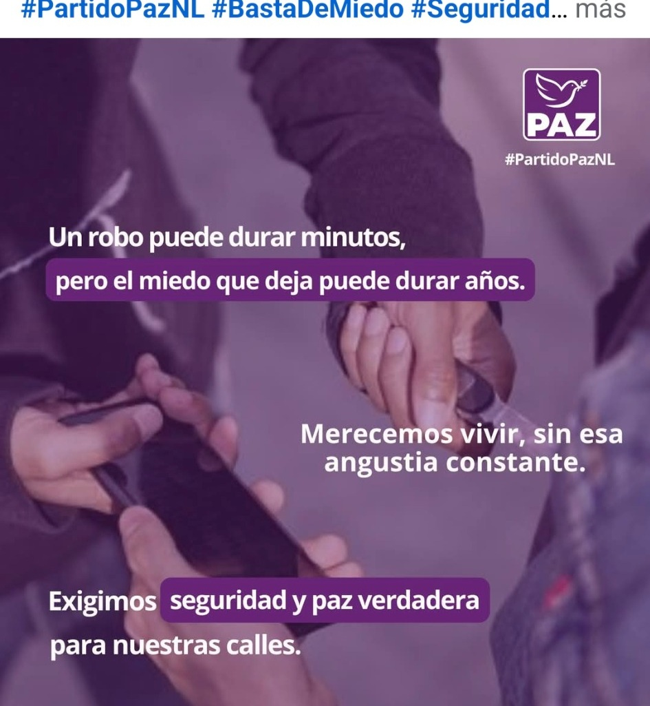
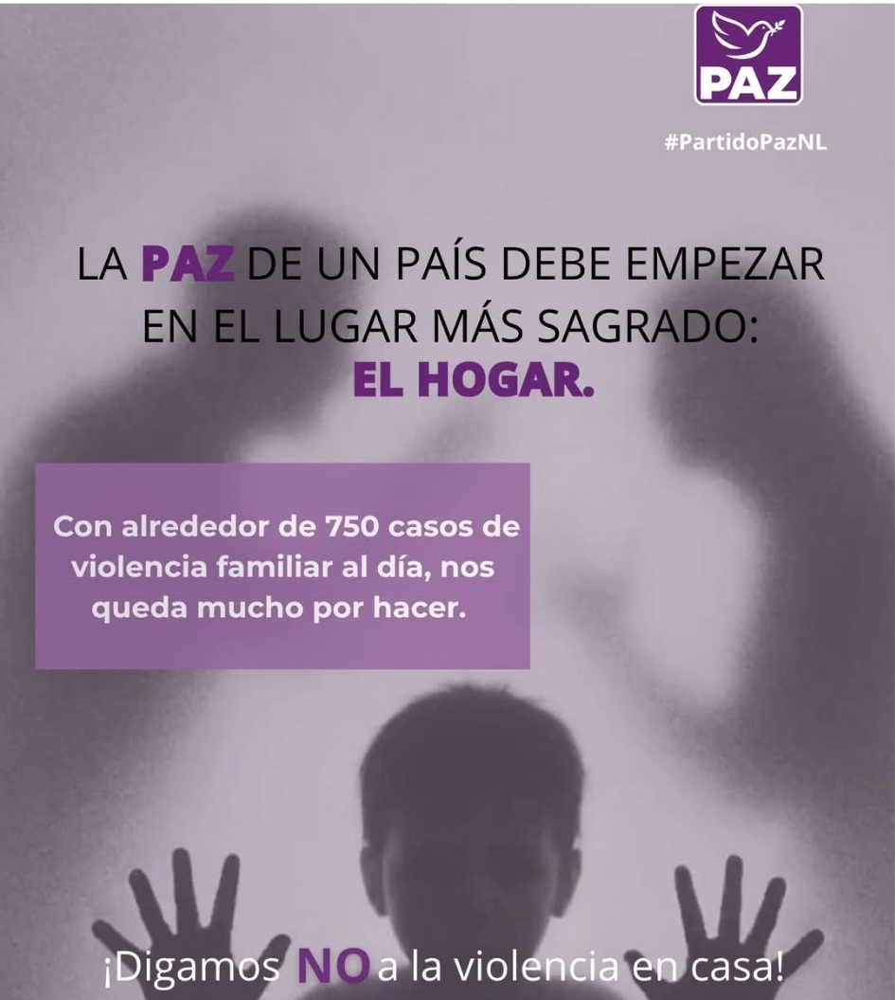
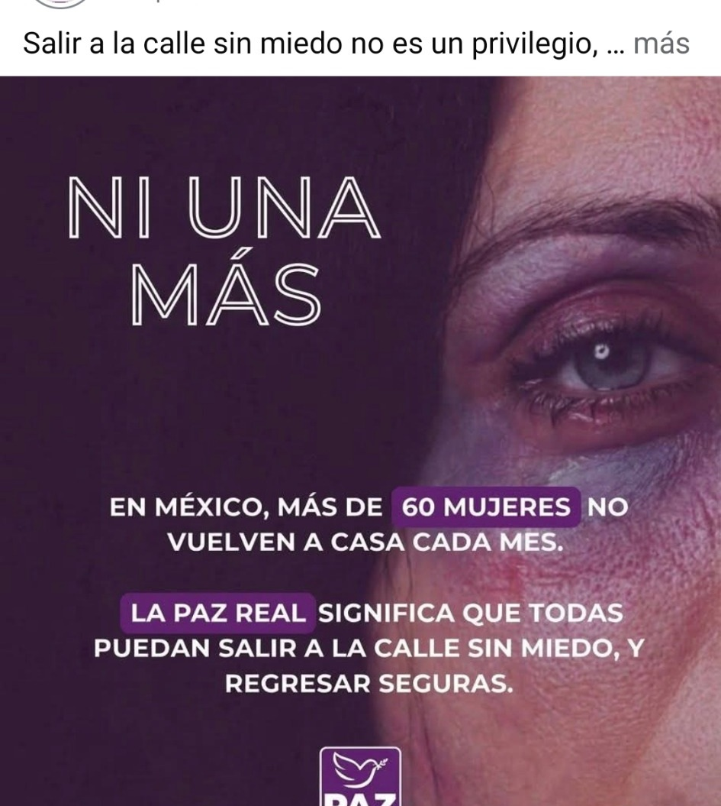
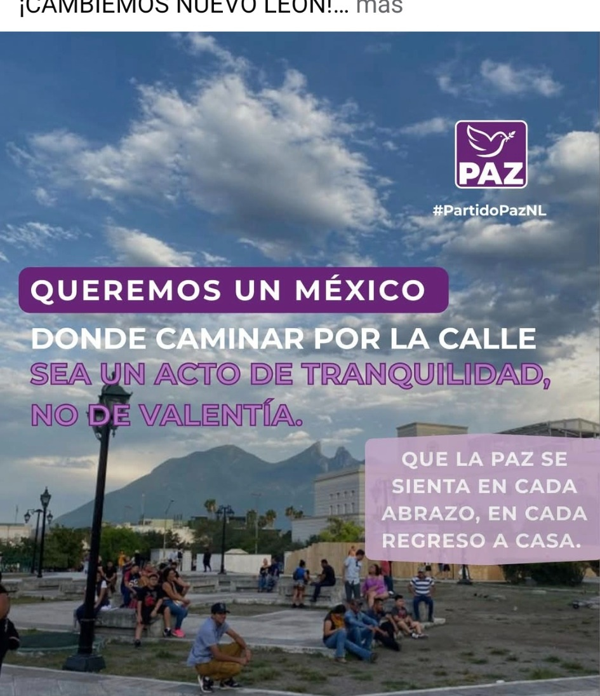
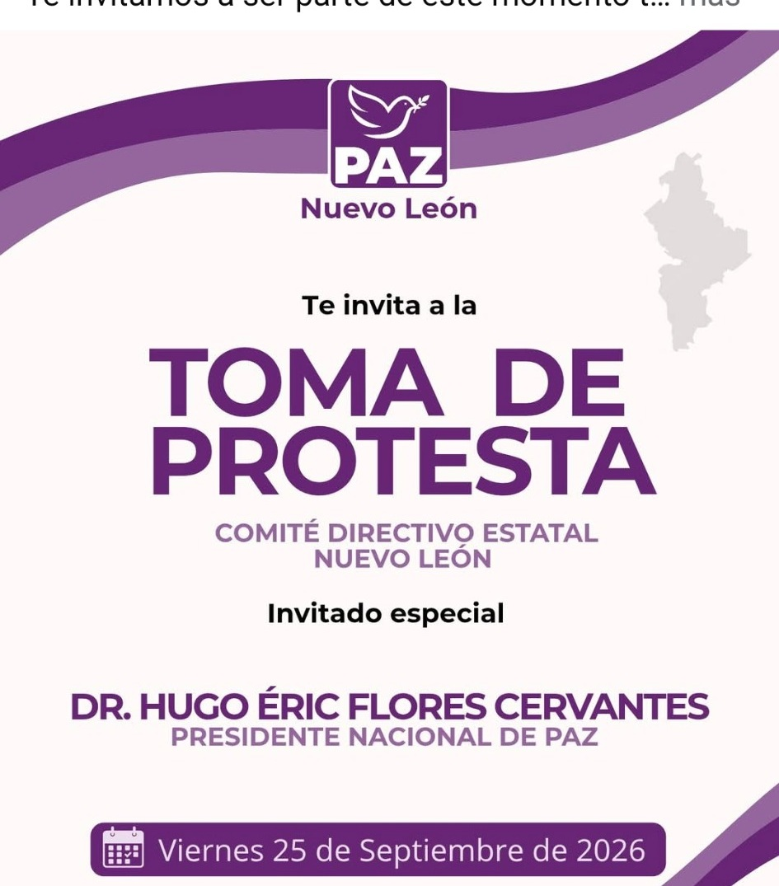
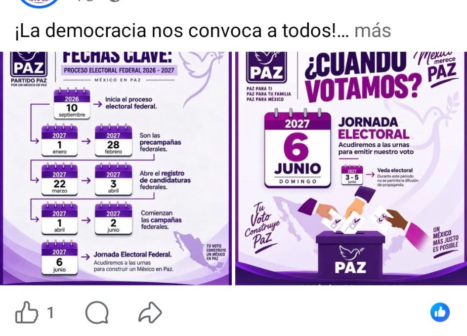

Familia
Vivir en paz significa poder ver crecer a las hijas e hijos con oportunidades y tranquilidad.
Esta propuesta toma el morado institucional de PAZ y lo combina con una identidad más propia de Nuevo León: cielos claros, el Cerro de la Silla, una estética más urbana y una presencia visual limpia.
El sitio se organiza alrededor de los temas que aparecen en las publicaciones compartidas: familia, seguridad, medio ambiente, tranquilidad, participación y vida pública.

Una web más norteña y sobria, diferenciada de las versiones de otros estados.
Los materiales compartidos permiten organizar el sitio en cuatro líneas temáticas claras sin inventar una plataforma adicional.
Vivir en paz significa poder ver crecer a las hijas e hijos con oportunidades y tranquilidad.
Caminar por la calle sin miedo y regresar a casa con seguridad.
El derecho a respirar sin riesgo y recuperar cielos más limpios.
Comité estatal, procesos públicos y presencia institucional organizada.

En las publicaciones de PAZ N.L. aparece la preocupación por la calidad del aire y la contaminación. Esta sección traduce ese mensaje a una página clara, con espacio para posicionamientos, propuestas y datos verificables.
Ese mensaje puede convertirse en una sección humana, visual y sencilla para hablar de bienestar familiar, convivencia y calidad de vida.
Merecemos esa realidad
Dos de los temas más recurrentes en los materiales compartidos son la seguridad cotidiana y la violencia dentro del hogar.

Un robo puede durar minutos, pero el miedo que deja puede durar mucho más. La web puede ordenar este tipo de mensajes por tema.

Espacio para campañas, prevención y mensajes de convivencia y seguridad dentro del hogar.

Una sección específica puede concentrar mensajes y actividades relacionadas con seguridad y derechos de las mujeres.

El diseño conecta las publicaciones de seguridad con imágenes y paisajes propios de Nuevo León.
La cuenta compartida muestra actividad partidista e información electoral. La web puede separar claramente noticias, eventos y documentos sin mezclar todo en el mismo feed.

Fechas, invitaciones, asambleas y actividades del comité estatal pueden tener su propia sección.
El material compartido también incluye calendarios y mensajes sobre el proceso electoral federal 2026–2027. En el portal se pueden publicar como información institucional y documental.

Esta versión queda pensada como una web real y responsive para GitHub Pages. Puede crecer después con noticias administrables, representantes, documentos, agenda, contacto oficial y formularios.